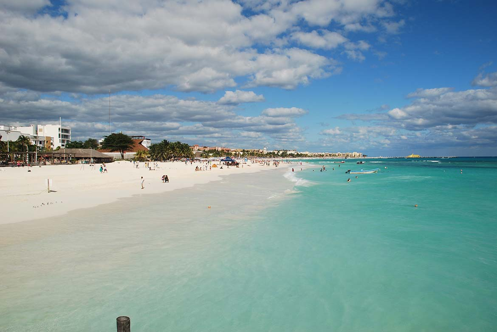

Playa Blanca es uno de los destinos más populares de Coclé. Sus arenas blancas y aguas cristalinas atraen a turistas de todo el mundo. Este lugar es perfecto para relajarse y disfrutar de actividades acuáticas como el snorkel y paseos en kayak.
Ubicación:
Playa Blanca se encuentra en la provincia de Coclé, Panamá, a aproximadamente 90 minutos en coche de la Ciudad de Panamá.
Horarios y Tarifas:
La playa está abierta al público todos los días. No hay tarifas de entrada, pero algunas actividades acuáticas pueden tener un costo adicional.
Atracciones Principales:
- Paseos en kayak
- Snorkel en aguas cristalinas
- Restaurantes frente al mar
- Actividades de pesca deportiva
Accesibilidad:
La playa es accesible en vehículo y cuenta con estacionamiento. Las instalaciones son adecuadas para personas con movilidad reducida.
Actividades Adicionales:
Además de las actividades acuáticas, Playa Blanca ofrece opciones como voleibol de playa, yoga al aire libre y excursiones guiadas por la naturaleza.